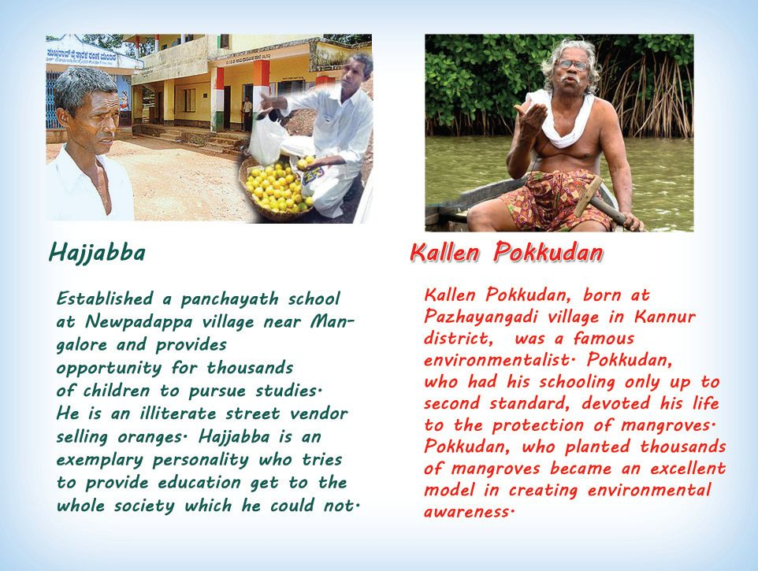
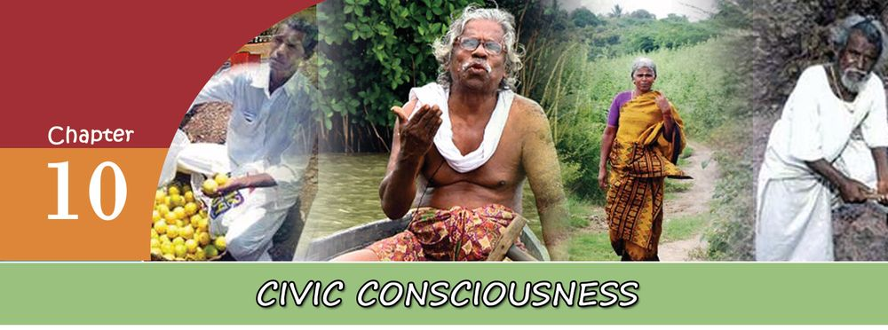
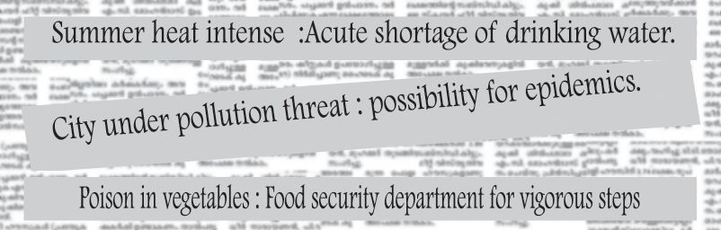
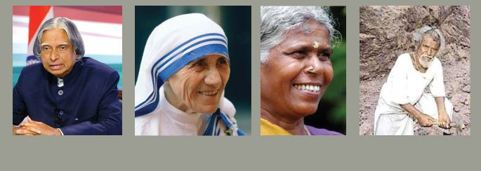
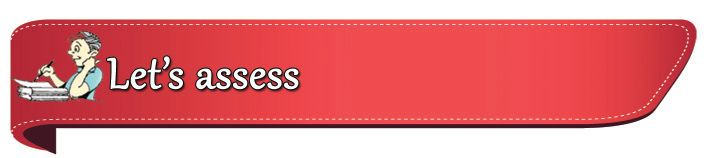

Observe the above given pictures and read the descriptions. The descriptions are about Hajjabba who contributed immensely to the education of a village and Kallen Pokkudan who worked for environmental conservation through the protection of mangroves. Their contributions were in the fields of their own choice, for the well being of the society.
Page 55


Page 56




Standard
X
Social Science I
Civic Consciousness
Collect more information about them and discuss with your co-learners. Their lives give the noble message that even ordinary people can undertake great activities. Divergent thinking, selfless activities, awareness about the problems of the society and fellow beings and willingness to serve are the factors that prompt them forward. Collect information about the person who aorked for the general goodness of society and schedule the common features
Creation of a great society requires creative attitudes and values in all individuals. Every individual in the modern society is known as citizen. Civic consciousness is the recognition that each citizen is for the society and the genuine interests of the society are the interests of the citizen. Those who have civic consciousness will always be ready to work for the society.
Importance of Civic Consciousness Civic consciousness influences the progress of the state and society. In the absence of civic consciousness human beings will become selfish and all the activities will be for his own achievements. This will adversely affect social life. In such a society there will be no peace or security. Observe the given news titles. Certain problems faced by the society are mentioned in them. Can the state alone find solutions to these problems? The collective action of the people and their cooperation is essential for this. Certain problems faced by the society and the solutions are given. Expand the table by writing more solutions.
184
Page 57


Social Science I
Civic Consciousness
Problems • Water scarcity
What can we do? • Effective utilisation of water • •
• Environmental pollution
• Garbage treatment at source • •
• Flood
• Shifting the residence in safe zone • •
• Corruption
• Awareness against corruption • •
From this we can understand that civic consciousness will help to solve many problems faced by the society. For ensuring the welfare of all and the reconstruction of the society a short film on civic consciousness has to be developed.It help the society to Prepare areas such as environmental reconstruct from the crisis and recover from insecurity. The protection and unanimous volunteer ship of all section of the people at the time of awareness against and present devouring deluge of 2018 helped the people of Kerala to survive. corruption it in the classroom. The basis of civic consciousness is the recognition that if the activities of each individual are for the wellbeing of the society, social problems can be solved.
Factors determining civic consciousness Formation of civic consciousness is determined by life situations and experiences. The life situation of each individual provides different experiences and hence there will be variation in civic consciousness. The important factors which determine civic consciousness are given below. • •
Family Associations
• •
Education • Political system
185
Social system
Standard
X
Page 58


Standard
X
Social Science I
Civic Consciousness
Each of the above factors influences civic consciousness. These factors mould an individual's thought and actions. Not only favourable circumstances, but certain negative and challenging situations will also be helpful in moulding strong civic consciousness in an individual. Discuss how different life situations help in moulding civic consciousness. Find out the personalities whose civic consciousness was formulated due to the influence of either positive or negative situations and list them.
How can we foster civic consciousness? It is essential to create and maintain civic consciousness. Deliberate effort is necessary to foster civic consciousness. All societies undertake positive measures to foster civic consciousness. Only through creative intervention in society can civic consciousness be fostered in all individuals. some factors are given below.
Family We learn to respect the elders and to engage in social service from the primary social institution of family. Family has an important role in fostering and maintaining sense of responsibility among its members. Inspiration and encouragement from the family will develop civic consciousness. The concept that each individual is for the family and the family is for the society should be developed in the family atmosphere. Discuss how family influences the formation of civic consciousness.
Prepare a blog on the various activities conducted in your school.
Education The primary aim of education is to equip the individual to effectively utilise the knowledge gained through the learning of different subjects for the betterment of society. Education will help to develop value consciousness, tolerance, leadership qualities, scientific temper, etc. Through education, science and technology can be effectively utilised
186
Page 59


Social Science I
Civic Consciousness
in a useful manner to the society. Through value- oriented educational approach we can instill civic consciousness among the people. Government formulates educational policies with this aim. What are the activities which your school can undertake for the formulation of civic consciousness? Prepare an annual calendar of these activities and implement them accordingly.
Associations There are several political, social, economic and cultural associations in our society. Such associations many a time equip the individuals to work voluntarily with a service mind. Several voluntary associations are working in the fields of protection of environment, protection of human rights, charity, etc. These associations can create awareness among individuals about environment and human rights.
Media Media plays an important role in the formulation of civic consciousness. Print and electronic media influences the society trenedously. News and information reach the masses through the media. Judicious and objective information lead to the formulation of creative ideas. Media should be independent and impartial. The information from the media should be evaluated critically. Prepare an album with news and pictures reflecting civic consciousness.
Democratic system Democracy is an inevitable component of civic consciousness. Democracy is the basis of all other components which help to develop civic consciousness. It is a way of life more than a form of government. All our activities should have a democratic approach. Living in cooperation is essential for a democratic society. Giving back the co-
187
Standard
X
Page 60



Standard
X
Social Science I
Civic Consciousness
operation and support received from others is a great sign of democratic consciousness. Democracy prompts individuals to think about fellow beings and to work for the protection of their freedom, equality and rights. Democracy believes in the rule of law which mean all are subject to law in a democracy.
Familiaraisation of Role Models
A.P.J. Abdul Kalam
Mother Theresa
Mayilamma
Dasaradh Manchi
Observe the pictures. They are some personalities with ideal civic consciousness, who gave valuable contribution to the society. Find their areas of action and contributions. While working in different areas they exhibited humanity, love towards fellow beings and duty consciousness. Everyone should work in their own areas of activity with magnanimity and dedication. If every individual is made to think and work in such a manner then only social progress is possible. You might have participated in organic farming, traffic awareness programmes, activities against drug abuse, and philanthropic activities. It indicates your civic consciousness. List out the activities that can be undertaken in schools for developing civic consciousness.
Civic Consciousness and Morality Gandhiji's views on morality in different dimensions of human life are given below. The basis of all activities is morality. What is morality? Morality means the ability to recognize virtues from vices, accept virtues and to perform duties with utmost responsibility. It is
188
Page 61


Social Science I
Civic Consciousness
the moral responsibility of each individual to perform the duty towards the society and the state.
Gandhiji's view on Morality $ $ $ $ $ $ $
Politics without principles Wealth without work Science without humanity Commerce without morality Education without character Worship without sacrifice Pleasure without conscience. All these things are extremely dangerous
Gandhiji
Evaluate our thoughts and actions. Find out and schedule the acceptable and unacceptable actions
Morality helps civic consciousness, whereas immorality destroys it. Creation of moral consciousness in all walks of life is the most effective way to foster civic consciousness. Civic consciousness is a creative state of mind. Certain activities with civic consciousness and without civic consciousness are given below. Put a tick mark () against the statements which reflect civic consciousness and a cross mark () against the statements without civic consciousness. Civic Absence of Consciousness civic consciousness
Statement • Obey traffic rules even if you are busy. • There is nothing wrong in disposing garbage in public places. • It is my duty to protect historical monuments. • It is my duty to protect nature. • Don't complain against injustice. • Corruption is permissible during crucial situations. • Respect and protect aged people.
189
Standard
X
Page 62


Standard
X
Social Science I
Civic Consciousness
Civic Consciousness: Challenges The main challenge faced by civic consciousness is the mindset to do anything for the sake of one's own personal interest, by negating public interest. How can we overcome this challenge?
We can also undertake certain activities The student community with civic consciousness can undertake many ideal activities. Some of them are given. Find out
• Each one should evaluate his activities critically. • Should work for one's interest without going against public interest. • Be the change which you expect from others. • Equal weight should be given to both rights and duties. • Individuals should act democratically and tolerably.
more activities. • Giving consent letter for organ donation • Blood donation • Participation in the activities of SPC, NCC, Scouts and Guides, clubs, etc. • Keep public places clean. • Give first aid to victims of accidents. • Help the differently abled and the aged. Undertake more activities and develop attitudes like this which will • • help to overcome challenges of civic
consciousness.
Social science learning and civic consciousness Social science learning has a major role in the formulation of civic consciousness. Social science, as an area of study which is very close to the society and human beings, envisages comprehensive changes in every individual. Let us examine how social science learning can be utilised for the formulation of civic consciousness. • • • • •
Equips the individuals to respect diversity and to behave with tolerance. Helps to understand the different contexts of political, social, economic and environmental problems. Equips the individual to suggest comprehensive solutions to different problems. Disseminate the message of peace and co-operation to the society. Makes the individual civic conscious and action oriented by familiarising the ideal models and activities of civic consciousness.
190
Page 63



Social Science I
Civic Consciousness
You might have understood that for the growth, development and sustainable existence of a society civic consciousness is very essential. But it is difficult to develop civic consciousness in all individuals. The easiest way to accomplish this great mission is by ourselves becoming civic conscious. Civic Consciousness Social Methods to Civic Determining science foster civic Civic consciousness Importance factors consciousness and morality consciousness learning and civic challenges consciousness
• • • • • • • •
What is meant by civic consciousness? What are the important factors that formulate civic consciousness? List out the features which we can see in persons with civic consciousness. Explain the role of morality in fostering civic consciousness. Civic consciousness help in solving the problems faced by society? Substantiate with examples. Give examples of certain ideal models who have high sense of civic consciousness. Explain the role of family, education and media in fostering civic consciousness. Suggest methods for overcoming the challenges faced by civic consciousness. Prepare a note on social science learning and civic consciousness.
191
Standard
X
Page 64


Standard
X
Social Science I
Civic Consciousness
• • •
Collect information about Role models who have high sense of civic consciousness and prepare an album. Find out and list the various things which students can do in different fields as an expression of civic consciousness. Find out the challenges faced by the society without civic consciousness and prepare a report.
192